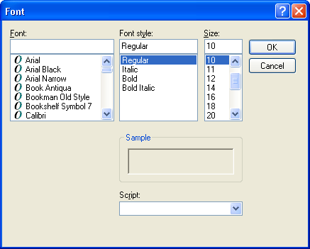
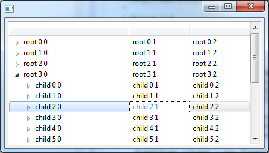
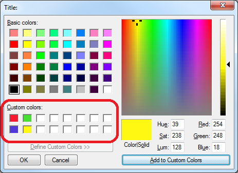

Milestone M3 |
|
| Highlight TrayItem Image |
Users now can provide a custom image for use as the hightlight image for a tray item on Cocoa.
The highlight image is shown when users activate the tray item. The default tray item image will be restored when users deactivate the tray item. Default Tray Item Highlighted Tray Item |
| Added support in StyledText to show the scrollbars only when needed |
In the past when a StyledText was created with scrollbars it would show them all the time, even when the client area was big enough to show the entire content.
By using |
| Event type constants in StyledText are now public |
The following event type constants were made public:
|
| Default Browser renderer is now configurable |
The native renderer that is used for SWT.NONE-style Browsers can now be configured by setting a Java property.
This is particularly important for applications that create Browsers with a specific native renderer style (eg.- For more information on using this new property see How do I specify the default type of native renderer that is used by the Browser? . |
| FontDialog Effects |
New API has been added to FontDialog to prevent the user from selecting font effects, such as color, underline, strikethrough and shadow.
 |
| New Combo API |
Two new APIs were added to Combo that allow users to get the caret information in a combo box. Combo.getCaretLocation returns the pixel coordinates of the caret. Combo.getCaretPosition returns the character position of the caret.
For an example of how to use this API see Snippet 359. |
Milestone M4 |
|
| Tree Cursor |
The new TreeCursor class can be used to enable users to navigate a Tree control's individual cells, similar to what TableCursor makes possible for Table controls. For an example of using TreeCursor see Snippet360.
 |
| VO Context Menu | On Mac, you can now use the keyboard to open a context menu when VoiceOver is running, using the standard VO key sequence Control+Option+Shift+M. |
Milestone M6 |
|
| XULRunner 10 | The Browser now supports embedding XULRunner 10.0.x (note that XULRunner versions 4.x - 9.x are not supported). Apps wishing to use this must ship a XULRunner 10 runtime and explicitly point at it as described in the FAQ . |
| Provide context menu trigger | MenuDetectEvent now fills in the event detail field to indicate whether the context menu is being triggered by the SWT.MENU_MOUSE or SWT.MENU_KEYBOARD. If the event.detail is SWT.MENU_KEYBOARD, custom controls can appropriately position the context menu based on current focus or selection. |
| Set/get custom colors in ColorDialog |
ColorDialog now supports getRGBs() and setRGBs(RGB[]) to allow applications
to retrieve, save, and restore any custom colors that the user selected in the dialog.
 |
| BIDI segments on text widget | The Text widget now supports adding SegmentListener for BIDI support. This allows BIDI ordering to be applied to segments of the text instead of the entire text. |
| Browser Function Access | BrowserFunction can now be installed into specific frames. |
| SWT Runtime introspection | SWT.isLoadable() can be used to determine whether the SWT implementation can be loaded in the current running environment. |
| Overlay scrollbars | Scrollable.getScrollbarsMode() can be used to determine whether the platform shows overlay scrollbars. |